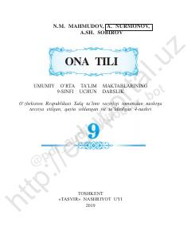

9O9-sinf o‘quvchilari uchun ona tili fanidan sintaksis bo‘limi bo‘yicha darslik.
Ushbu darslik umumiy o‘rta ta’lim maktablarining 9-sinf o‘quvchilari uchun mo‘ljallangan bo‘lib, ona tili fanidan sintaksis bo‘limini chuqur o‘rganishga qaratilgan. Kitobda sodda va qo‘shma gaplar, ularning turlari hamda tinish belgilarining ishlatilishi bo‘yicha nazariy va amaliy bilimlar berilgan.